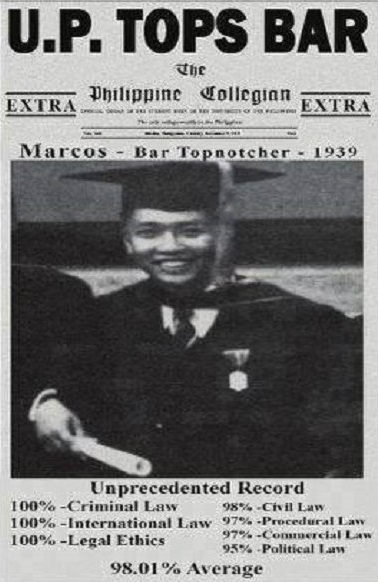
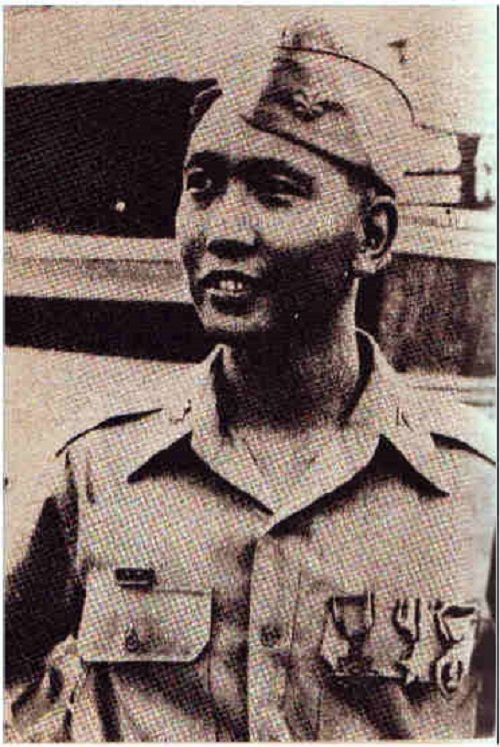
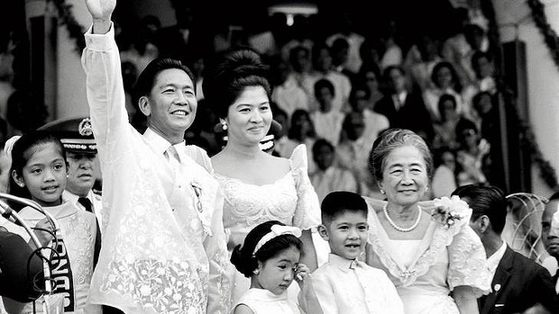
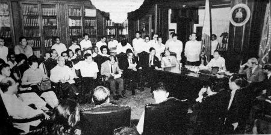
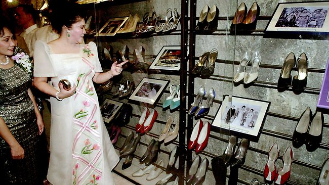
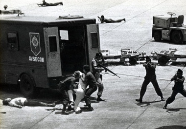
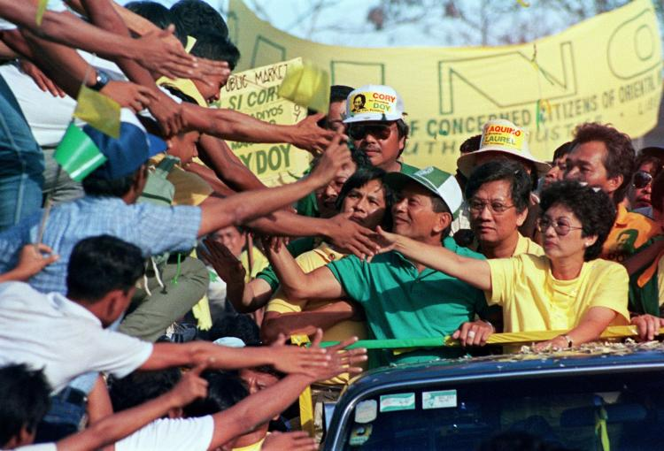

The young Ferdinand Marcos went to school in Manila and later attended law school at the University of the Philippines.
1935
September 20, the day after Julio Nalundasan defeated Mariano Marcos for a seat in the National Assembly for the second time. Nalundasan was found dead in his home. Ferdinand, his father and brother-in-law were tried for the assassination, and Ferdinand with his brother-in-law were found guilty of the murder.
1936
Ferdinand argued their case on appeal to the Philippine Supreme Court and won acquittal. Remarkably, while Marcos was preparing his case, he was studying for the bar exam and became a trial lawyer in Manila subsequent to the acquittal.

Ferdinand Marcos tops 1939 Bar Examination
ENTERING POLITICS
During World War II Ferdinand Marcos served as an officer with the Philippine armed forces, later claiming that he had been a leader in the Filipino guerrilla resistance movement. These claims were a principal element in his political success, but it was revealed in U.S. government archives that he actually played little or no part in anti-Japanese activities.

Marcos during wartime in the Philippine Army
1946
At the end of the war when the American government granted the Philippines independence on July 4, the Philippine Congress was created. Marcos ran and was twice elected as representative to his district and served from 1949 to 1959.
1959
Marcos took a seat in the Philippine Senate, a position he held until he ran for and won the presidency in 1965.
ASCENSION TO PRESIDENCY
After failing to attain the Liberal Party’s nomination for president, Ferdinand Marcos ran as the Nationalist Party candidate.
1965
At the end of the expensive and bitter campaign, Marcos prevailed and was inaugurated on December 30. His first presidential term is notable mostly for his decision to send troops into the fray of the Vietnam War, a move he had previously opposed as a Philippine senator.

Ferdinand Marcos and his family to his first inaguration
1969
Marcos was reelected, becoming the first Filipino president to serve a second term. Massive crowd violence, vote buying and fraud on Marcos’ part, however, were prominent traits of his second campaign, which was funded with $56 million from the Philippine treasury.
1970
What arose from the campaign unrest became known as the First Quarter Storm, during which leftists took to the streets to demonstrate against both American involvement in Philippine affairs and the increasingly apparent dictatorial style of Ferdinand Marcos.

UP faculty presenting to Marcos a declaration of concern, as a result of the January 26 rally
STATE OF REGIME AND DOWNFALL
1972
After Martial law was decreed, Ferdinand Marcos' wife, Imelda, became a powerful figure, often appointing her relatives to lucrative governmental and industrial positions while accumulating upward of 1,000 pairs of shoes and several Manhattan skyscrapers.
These acts were akin to Marcos’ state-imposed "crony capitalism," by which private businesses were seized by the government and handed over to friends and relatives of regime members. These acts would eventually led to economic troubles for the Philippines and further civil unrest.

Imelda Marcos at the shoe museum (her shoe collection)
1980
Marcos' later years in power were marred by widespread government corruption, economic stagnation, a widening economic gap between the rich and poor and the growth of a communist guerrilla uprising. Change was coming to the Philippines.
1983
On August 21st, Benigno Aquino Jr. returned from his long exile to offer the Philippine people a new face of hope. Unfortunately, he was shot dead by his military escort as he stepped off the plane in Manila. The assassination was seen as the work of the government and ignited massive countrywide protests. An independent commission appointed by Marcos concluded a year later that high military officers were responsible for Aquino's assassination, although it has since been suggested that Marcos or even his wife had ordered the killing.

The Assassination Of Benigno Aquino Jr.
1985
Also contributing to Marcos' downfall was the resolution signed by 56 assemblymen calling for his impeachment for allegedly diverting U.S. aid to his personal coffers.
1986
To quiet the opposition and reassert his position of power, Marcos called for presidential elections. Corazon Aquino, the widow of Benigno Aquino, emerged as a formidable opponent and became the presidential candidate of the opposition.
Marcos, however, managed to defeat Aquino and retain the presidency, but it was quickly revealed that his victory was only ensured through massive voting fraud carried out by his supporters. Marcos was discredited at home and abroad, and a tense standoff ensued between his supporters and those of Corazon Aquino.
With his health failing and support for his regime fading fast, on February 25th, with the United States urging him on, Ferdinand Marcos went into exile in Hawaii.
Evidence emerged that during his years in power Marcos, his family, and his close associates had looted the Philippines’ economy of billions of dollars through embezzlements and other corrupt practices. Marcos and his wife were subsequently indicted by the U.S. government on racketeering charges.

Corazon Aquino as a presidential candidate
1990
After Marcos’s death, Imelda was acquitted of all charges by a federal court. She was allowed to return to the Philippines in 1991.
1993
Philippine court found her guilty of corruption, the conviction was overturned in 1998.